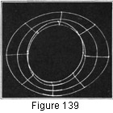

1930—Millinery Processes
by Carlotta M. Brown
USES OF WIRE
Kinds of Wire used in Millinery
The most common wires used in millinery are cable, frame, lace, and tie wire. These come in both black and white and are covered with silk, mercerized, or cotton thread.
Cable wire is the heaviest and stiffest of these wires. It is sometimes used for an outside decoration, but is usually employed for large cord edges, for the head-size wire circles, and for the circumference wire of brims to be used for blocks. It may be purchased in colors as well as in black and white.
Frame wire is used in the making of frames for transparent hats, in the wiring of brim edges, and in any part of the frame where stiffness is desired. It is less stiff and much smaller than cable wire, however.
Lace wire may be used in wiring brims and crowns where only slight stiffness is wanted. It is also much used in the wiring of transparent bows.
Ribbon wire is almost indispensable in the construction of certain types of curved frames. It is made of two strips of cotton fabric with small wires pasted between. Ribbon wire may be purchased in many widths, though the two-wire width is the one most commonly used.
Tie wire is used in the construction of wire frames for tying the heavier wires together, for making flowers and ornaments, and for wiring where only very slight stiffness is desired.
All the different kinds of wire used in hat-making may be purchased by the bolt except tie wire, which comes wound on spools. When opening a bolt, be very careful not to remove all the tie threads at once or the bolt will unroll too rapidly and spring out of shape. Wire should be handled firmly but lightly, for kinks pressed into it are most difficult to straighten. It is always wise to clip the wire from the bolt by a pair of wire nippers or pliers.
Wire Frames
Wire frames are used for constructing wire-frame blocks (see Blocking,). They are also used as the foundation of the transparent hat (Fig. 139).
Construction of the Brim for the Transparent Hat
Measure the exact head size (see Measurements) plus a 2-inch lapping on each head-size circle. The head size consists of two wire circles standing 1 inch apart. The upper circle should be half an inch smaller than the lower to conform to the upper curve of the head. In measuring the proper length of wire for these circles, run the tape measure along the upper side of the wire as it is unrolled from the bolt. Do not measure from the lower side of the wire on account of the slightly concave surface.
Join the wire lengths in circles lapping 2 inches, and tie the lapped wire with tie wire. Two of the wire threads are used for the binding of the lapped wires—one wound around each end of the 2-inch lappings (Fig. 141). In joining the lappings the tie wire is folded around the head-size wire only once and twisted by the nippers. The manner of handling the nippers is important, as the tie wires are frail and are easily broken. The tie wire must be caught between the nippers at a sufficient distance from the head-size wire to prevent it from breaking as it tightens.
The two head circles, which are to form the 1-inch headband, are placed one above the other, the larger circle at the bottom and the smaller circle at the top, and are set together by eight wire spokes placed at equal distances around the band. To insure accuracy, the head circles are marked for the placing of these spokes. Beginning at the center of the lapped wires (which always are placed at the back of the hat), measure one half the actual distance of the head size, thus marking the half section. The marking of the fourths and eighths follows (Fig. 140). The length of the spoke always is determined by the width of the brim plus 3 inches for the turnings and the headband; thus a 3-inch frame requires a spoke 6 inches in length. To join the head-size circles the spokes are bent 1 inch horizontal (to attach to the upper circle) followed by 1-inch vertical (for band uprights) followed by 4 inches horizontal (for brim foundation) (Fig. 142); and the remaining inch is turned upright for attaching the circumference, or outer brim, circle. All the spokes are attached to the lower head-size circle first and are carefully adjusted to the spokes at the exact markings on the circle. This is done by placing the lower head circle in the angle formed by the 1-inch vertical and the 4-inch horizontal, the circle being held in place by twisting the 4-inch horizontal around the circle wire (Fig. 141). It will be difficult to keep the wires from slipping unless the thumb and first finger of the right hand are held firmly against the wire at the head-size circle while the turning is being done. When the lower circle is in place, the upper circle of the headband is placed in the angle formed by the 1-inch horizontal and the 1-inch vertical, care again being taken to follow the corresponding markings, and the same process of joining is followed. When completed, the head size must be oblong instead of round. In the final fitting slip the oblong band over the head, using the fingers to press the wire gently into the shape of the head.
Figure 140. Wire head-size circle showing points at which the eigh brim spokes are attached.
Figure 141. Wire head-size circles showing the two-inch lapping at the back and method of joining spokes to the head-size circles.
Figure 142. Wire-brim spoke bent for joining to the head-size circles.
After the headband has been fitted, adjust the brim wire. For a drooping brim gently turn the wire spoke downward, and by a slight pressure of the thumb and the first finger shape it as desired. For an upturned brim do the reverse. See that all the brim spokes are tightly clamped. The nippers may be used to press the turnings firmly into place. The greatest trouble at this point of frame-making is in keeping the brim spokes in a direct line from the head size to the outer circle. This may be accomplished with less difficulty if a reenforcing wire is run around the top of the brim spokes not more than ¾ of an inch from the head size, caught to each spoke with the tie wire, lapped 2 inches in the back to correspond to the head-size lappings, and secured as were the head-size lappings with the tie wire.
The frame is now ready for adjustment of the brim's outer circle. Measure enough wire for the circle, allowing 2 inches for lapping in the back. Place this wire at the brim edge, in the angle formed by the 4-inch horizontal and the final 1-inch vertical, as was done in attaching the head size. Do not clamp tightly until the frame is perfect. Place another reenforcing wire halfway between the outer brim and the head size. The frame is then finished unless the removal of the first reenforcing wire is desired. This wire has now performed its duty and may be removed. To eliminate waste and secure even lengths of the tie wire, roll the wire from the spool around the tips of the first two fingers of the left hand and cut the wound wires at the top, bottom, and each side of the fingers. The result is four small bunches of wire threads of equal and desired length. Wire foundations are almost never used for the crowns of transparent hats because they are stiff and unbecoming. Instead soft crowns are used with the transparent-brim hat.
Wiring Fabric Frames
Brim edge. Measure around the brim edge for the length of wire needed, plus a 1-inch lapping. Clip off the wire with nippers. This wire should be straightened out as nearly as possible to conform to the line of the hat before starting to sew it to the brim, as curled wire is extremely hard to manage. The straightening of the wire is accomplished by placing the wire between the thumb and the first finger of the right hand and, holding the end of the wire firmly in the left hand, running the thumb and the first finger very lightly back and forth over the wire until all the slight indentations have been removed.
As all wire lappings on fabric frames are 1 inch, start the wire about half an inch to the right of the center back. When the wiring is completed, the 1-inch wire lapping will be directly at the back of the hat. The wire is always placed at the edge and on the top of the brim so that it may not interfere with the finishing at the edge of the brim when the brim is covered. Fasten the end very securely so it will not become loose as the work proceeds. The wire is attached to the frame by using a lock stitch ¾ of an inch long. This is chosen because the lock in the stitch fastens the wire so securely that there is no possible chance of its slipping away from the brim edge (Fig. 3). The wire is carried around the entire circumference of the brim, and, after lapping, the second end is fastened as was the first. Be careful neither to stretch the brim nor to "full" the wire as it is being attached. If this is done, the result will be a waving of the brim, and the wire must be taken off and readjusted. Cover the wire with a narrow bias binding (Fig. 3).
Reenforcing Wire
The reenforcing wire is run halfway between the outer brim line and the head-size oval and is used only when necessary. The more expensive frames seldom need this extra wire, but the cheaper frames usually require it. It is used to hold the frame firmly enough to carry a smooth covering without giving way entirely or becoming limp when worn in extreme dampness. If this wire is to be used, it is put on the top of all hats except those of the mushroom (drooping) type; in these it is placed underneath the brim on account of the shadow which is thrown by the droop and which hides the wire. The lock stitch again is used, but the small part of the stitch is placed over the wire and the greater length runs along the opposite side. If the reenforcing is used, it is covered with a narrow piece of bias crinoline.
Use of Ribbon Wire
Ribbon wire is cut in lengths equal to the width of the brim plus 1 inch for "anchor" tabs. These strips are sewed to the brim, and the tabs are attached firmly to the crown. Any desired curve or droop of the brim can then be obtained by bending these strips of ribbon wire (Fig. 83).